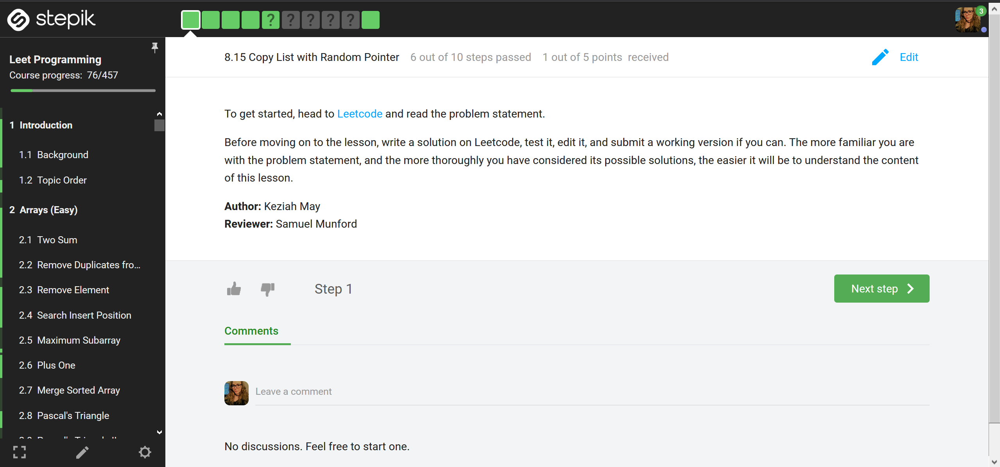
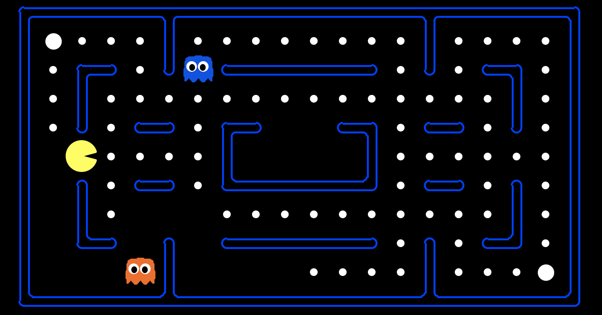
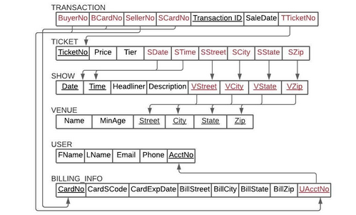
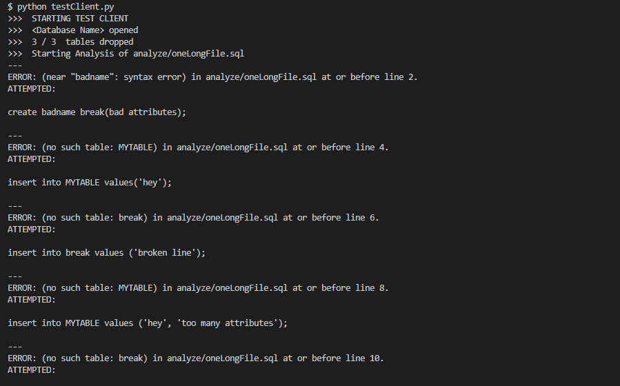
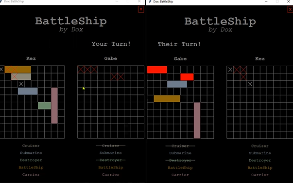
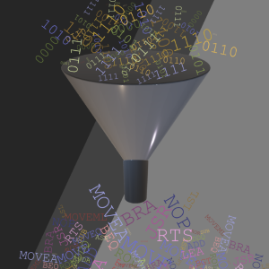

Software Projects
Recent software projects and project highlights
Leet Programming Online Course by T4G (2,084+ lines of code)

C++ | Stepik | June 2020 - Present
Leet Programming is a free online course meant to help software engineers prepare for technical interviews. It takes problems from leetcode and provides solutions and explanations. The goal is to help learners not only see solutions to a problem, but to understand those solutions. I have contributed more than 27 lessons and taught 8 live workshops.Merge Reinforcement Learning Algorithm into Pacman Game (505 lines of code)

Python | January - March 2021
Forking an existing pacman program, I merged AI algorithms into the implementation allowing pacman and ghosts to play intelligently. Peak performance included reinforcement learning. Implemented & successfully merged algorithms include: Breadth-first search, depth-first search, uniform-cost search, A* search, Minimax, expectimax, value iteration (online and prioritized offline), and Q-learning (epsilon greedy, approximate).Concert Ticket Database by The Quarter Notes

Python | SQLite | January - March 2021
Ticket Market is a database implemented to store information about box office and peer-to-peer concert ticket sales. The project included design documentation, create files, insert files, select files (to demonstrate functionality), a basic GUI, and a test file for quality assurance. Functionality includes: List all 3rd party sellers that price general admission tickets for a show under a given cost, list all upcoming shows for a particular venue that occur on specific days during the year, list all events in the upcoming year at a specific venue that are multiple day events, and many more.SQLite Test Client (460 lines of code + example code)

Python | SQLite | March 2021
Try out my test script for SQLite databases. All you have to do is head over to the repository, clone it, follow the installation instructions, and you can easily test your database and automate a number of tasks. Features include: automated dropping of all tables in the database, creating tables defined in specified files, populating tables from insert files, querying the database from select files, and running/error checking a sql file.BattleShip by Dox (1792 lines of code)

Python | Pickle | September - December 2020
Battleship by Dox is a client-server game written in python. User information including score records, username, and password are persistant due to pickle serialization. My responsibilities included design, front-end development, back-end graphics utilities, defining an interface for the client program, and creating a video demo of the gameplay and features. The graphics were all created using John Zelle's graphics.py library.Disasembler from Binary to Assembly by dreamteam (503 lines of code)
